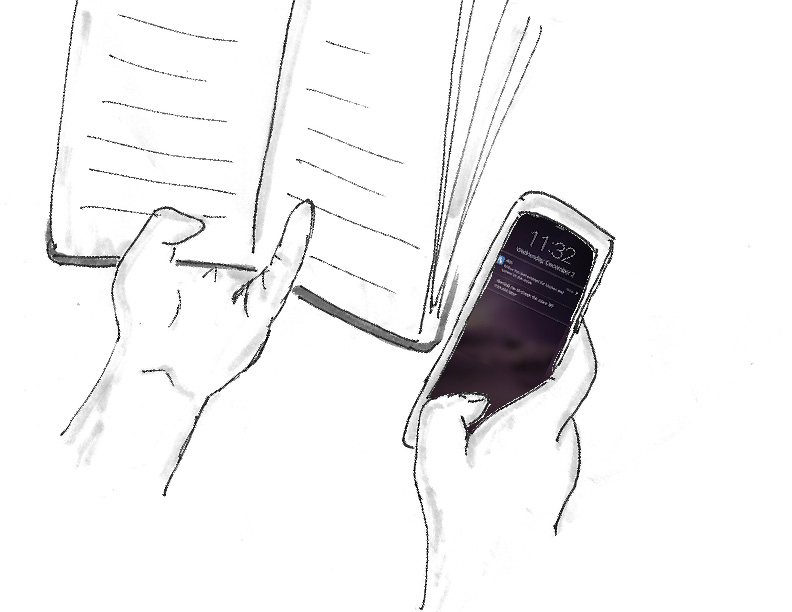

Design Principles
Interaction with users helped us developing some principles that should be considered while designing-
- Ubiquity: The device needs to be hidden from the patient as often it is difficult for the Alzheimer’s patient to relate with technological devices.
- Quick Action: While testing, we found out that as soon as the caregivers saw the notification they wanted to perform some action like immediately head for home or call neighbors.
- Adaptable: Every Alzheimer's patient is different from other. Thus the system should be able to adapt itself for need of different patients.
Ideation and Iteration
We wanted to empower family caregivers of patients with early to middle-stage Alzheimer’s through monitoring technology so that their loved ones can remain at home longer.
While ideating for this, the two broad directions we came across was using robotic monitor or having a wearable. Robot could keep an eye on the patient and interact with the patient in absence of caregiver. Wearable can be used to track the patient and inform the caregiver in case of patient interacts with any dangerous object.
Concept
The system we designed consist of a wearable for the patient, sensor that can be attached with dangerous objects and mobile to alert the caregiver. Wearable will track the patient and alert the caregiver if he comes near a risky object such as knife, bleach, stove or car keys. Risk associated with an object varies based on patients. Some patients have habit of taking car keys and driving off, whereas some patients turn on stove and forget. We made these stickers customizable so that caregivers can modify notification based on their risk assessment associated with an object. Wearable can also track patient and should be designed to look like normal object rather than a smart watch or band. Additionally, it can track if patient has taken a fall. Often, Alzheimer’s patient are old and have difficulty in getting up. All the notification have a quick actions associated with it to make the response on the notification faster.

Facilitate the task of caregiving by monitoring
Use Case
These use case will better explain the use of the device for the caregivers of Alzheimer's patients.
Use Case 1: Wilbur is the Alzehimer's patient who has difficulty getting up after a fall. One day his caregiver goes out for shopping while he takes a fall. This use case shows how can our system be useful in that case.

Caregiver goes to shop
Willbur takes a fall
Caregiver recieves notification
Caregiver calls neighbour
Use Case 2: Wilbur used to go for walk before he became a patient. Sometimes he just goes for walking alone and then gets lost. Caregiver has set an app to trigger alert if Wilbur leaves the building. One day, caregiver goes out to buy medicines for Wilbur when he wanders off from the home.

Caregiver goes out to buy medicines
 She is alerted that he has left home
She is alerted that he has left home
 She tracks his location
She tracks his location
 She drives to pick him up
She drives to pick him up
Use Case 3: Some things like turning stove on, bleach etc can become dangerous object in hands of the Alzheimers patient. Caregiver is working in other room when she recieves a notification saying that Wilbur has turned on the stove.
Caregiver is reading in other room
 She drives to pick him up
 She drives to pick him up
She drives to pick him up

{kind=link}
{kind=link}
{kind=link}
{kind=link}
{kind=link}